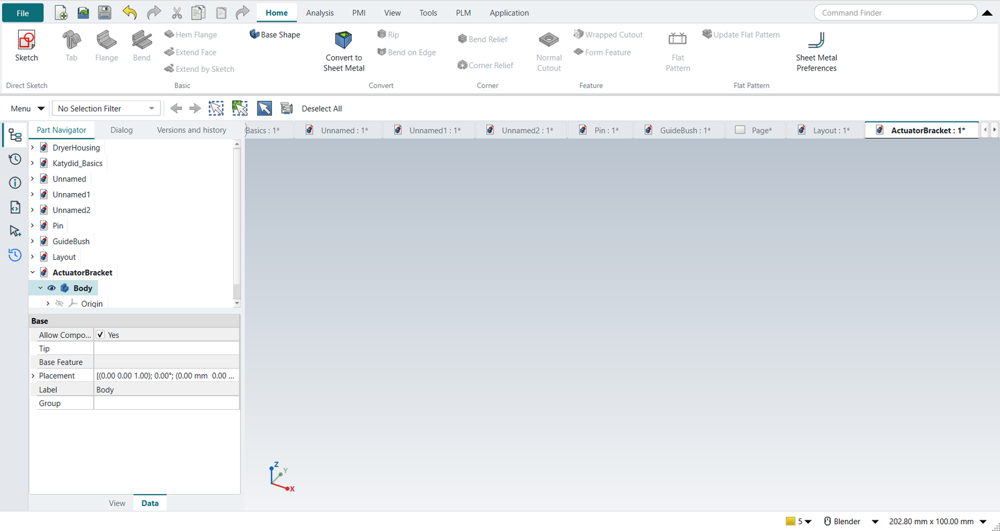
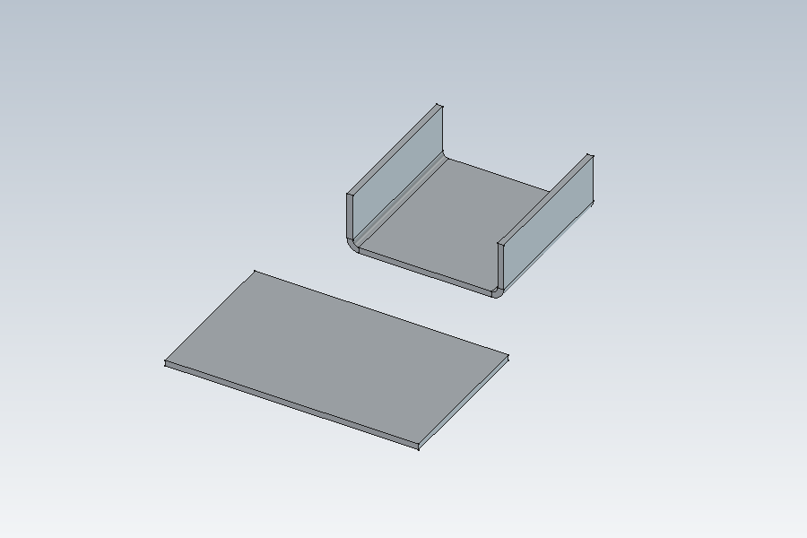

Tutorial W: The actuator bracket in sheet metal
| Book |
Randy H. Shih, Parametric Modeling with Siemens NX (SDC Publications), ch. 13, Basic Sheet Metal Designs (the actuator bracket, the bend allowance, the flattened length by hand, p. 13-31) |
| You learn |
Ctrl+Shift+M, Sheet Metal Preferences (thickness, bend radius, neutral factor), Tab, Flange with Outer Sharp and Material Inside, Flat Pattern, the bend allowance, a drawing of the flat pattern |
| Sizes |
16 gauge sheet, 0.0625 in (1.5875 mm), bend radius 0.0625 in, neutral factor 0.41; a tab 1.508 in between the flanges' inside faces and 1.620 in long; flanges 0.615 in tall outside |
Step by step
1. The Sheet Metal application
Ctrl+N, then Ctrl+Shift+M. The Home tab has NX’s sheet metal commands; the add-on behind them is bundled with NX-Style (Sheet Metal).

2. Sheet Metal Preferences
Sheet Metal Preferences: thickness 1.5875, bend radius 1.5875, neutral factor 0.41. The dialog shows what they give for a 90° bend: bend allowance 3.5160 mm (0.13843 in, as in the book), bend deduction 2.8340 mm.
3. Tab
A rectangle 1.633 × 1.620 in on the XY plane: the tab’s 1.508 in plus the two thicknesses, since the flanges will be inside it (the sketch is drawn by script; tutorial A shows sketching). Select it, Tab, OK: a plate of the preferred thickness.
4. Flanges
Select the plate’s two long top edges, Flange. Length 15.621 (0.615 in), Length Spec Outer Sharp (the height to the outside), Bend Type Material Inside (the plate’s outline stays the outside); OK. The bend radius and the neutral factor come from the preferences.
5. The flat pattern, checked by hand
Select the plate’s outside face, Flat Pattern, OK. The flat pattern is 67.0523 × 41.1480 mm.
The book flattens half the bracket by hand: (1.508/2 − 0.0625) + (0.615 − 2 × 0.0625) + 0.13843 = 1.31992 in, the straight lengths between the bend’s tangent lines plus one bend allowance. Twice that is 67.0519 mm; the 0.4 µm difference is the book’s rounding.

The replay
| # | In the book (NX) | In FreeCAD NX-Style | Result | Notes |
|---|---|---|---|---|
W1 |
Ctrl+Shift+M: the Sheet Metal application |
Ctrl+Shift+M |
same |
application sheet_metal; tabs ['Home', 'Analysis', 'PMI', 'View', 'Tools', 'PLM', 'Application']; commands not found none; Tab, Flange, Bend, Hem Flange, Normal Cutout and Flat Pattern from FreeCAD’s SheetMetal add-on (bundled), Sheet Metal Preferences and Flat Pattern from NXStyle |
W2 |
Sheet Metal Preferences: 16 gauge, thickness and bend radius 0.0625 in (1.5875 mm), neutral factor 0.41 |
ribbon 'Home › Flat Pattern > Sheet Metal Preferences', the three values typed, MB2 = OK |
differs |
Thickness 1.587 mm, inside radius 1.587 mm, neutral factor K 0.41 (DIN k 0.82); 90° bend: bend allowance 3.5160 mm, outside setback 3.1750 mm, bend deduction 2.8340 mm. NX: Sheet Metal Preferences > Part Properties; here they are the add-on’s defaults, so Tab and Flange start from them |
W3 |
The tab’s profile: 1.633 x 1.620 in (the tab 1.508 in between the flanges' inside faces, plus two thicknesses) |
drawn by script (tutorials A to D show sketching) |
differs |
rectangle 41.4782 x 41.1480 mm on the XY plane of the body |
W4 |
Tab: the sketch becomes a plate of the preferred thickness |
sketch selected + ribbon 'Home › Basic > Tab'; MB2 = OK |
same |
thickness field showed 1.59 mm; plate 41.4782 x 41.1480 x 1.5875 mm |
W5 |
Flange on both long edges: 0.615 in outside, material inside |
the two top edges selected + ribbon 'Home › Basic > Flange'; Length 15.6210 typed, Outer Sharp, Material Inside; MB2 = OK |
same |
bracket 41.4782 x 41.1480 x 15.6210 mm; bend radius 1.5875 and K 0.41 from the preferences |
W6 |
Flat Pattern: unfolded with the neutral factor 0.41; its length against the book’s hand calculation |
the outside of the tab selected + ribbon 'Home › Flat Pattern > Flat Pattern'; MB2 = OK |
same |
K field showed 0.41; flat 67.0523 x 41.1480 mm; by hand (Shih p. 13-31): 2 x 1.31992 in = 67.0519 mm; bend allowance 0.13843 in (0.41 used) |
W7 |
The bracket and its flat pattern in the graphics window |
render of the graphics window |
same |
13.4% of the view shows the part |
W8 |
Drafting: the flat pattern on a sheet at 2:1 with its overall sizes |
Ctrl+Shift+D, ribbon 'New Sheet', the flat pattern selected + 'Base View'; the two dimensions placed by script |
differs |
dimensions [67.052, 41.148] mm (flat length 67.052 expected; view projected before dimensioning: True); NX has a Flat Pattern view type, here the flat pattern solid is viewed from above |
| Result | Means |
|---|---|
same |
The book’s NX steps work as written. |
differs |
It works, but the FreeCAD way is different; the notes say how. |
limit |
The book’s way fails in FreeCAD itself; a workaround follows in the next steps. |
missing |
FreeCAD has no such function; a stand-in follows. |
skipped |
Not replayed; the notes give the reason. |
FAILED |
Did not work. |
What differs from NX
-
NX keeps the sheet metal preferences with the part; here they are the add-on’s defaults, per user.
-
NX’s Flat Pattern feature has its own drawing view type with bend lines and a bend table; here the flat pattern solid is viewed from above. The add-on can also write the outline and bend lines as sketches (Generate Sketch in its Unfold dialog).
-
The sizes are typed in millimetres; the book works in inches.